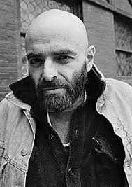

Sheldon Allan "Shel" Silverstein was an American writer known for his cartoons, songs, and children's books. He styled himself as Uncle Shelby in some works. His books have been translated into more than 30 languages and have sold more than 20 million copies.
